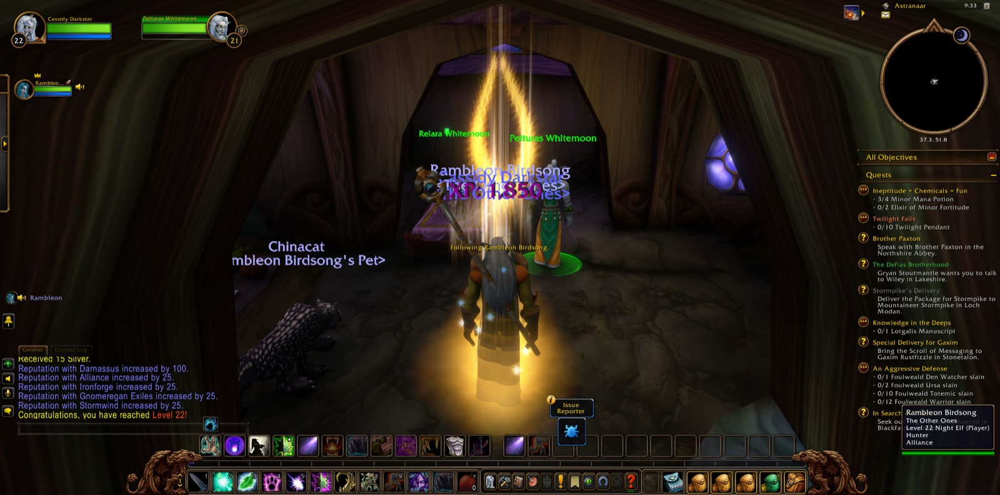
Cassidy Darkstar came first to The Zoram Strand and went down into Blackfathom Deeps, where Errook, a druid of his own calling, walked beside him for a few steps only. Bluntz the paladin joined him there, and Rambleon the hunter after him. The Deeps did not suffer him long. He fell, and his road turned back to Twilight Vale in Darkshore, and Bluntz went his own way. Yet that was the least of what followed, for the greater errands of the road still lay in Ashenvale.
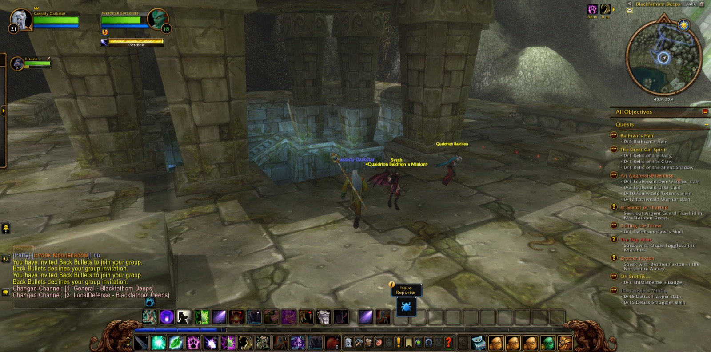
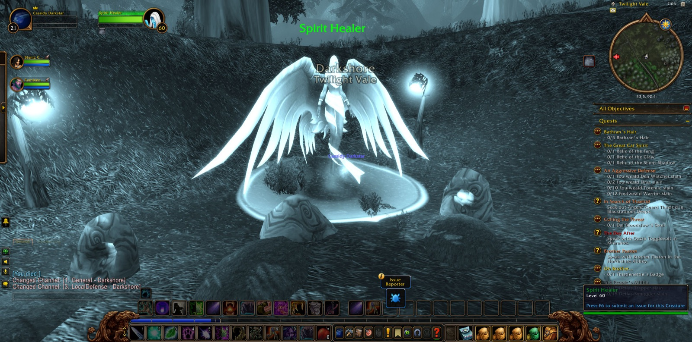
At Bathran's Haunt and among The Ruins of Ordil'Aran the Forsaken had made their dwelling: Seekers, Thugs and Herbalists, many of whom he overcame. There he gathered four Minor Mana Potions for the errand called "Ineptitude + Chemicals = Fun," and five locks of Bathran's Hair, and many pictures were taken in that haunted place. Gabe, another druid, stood with him for a short while among the ruins. He bore the hair to Maestra's Post and took up Orendil's Cure, and on the way he slew a Ghostpaw Runner, Dark Strand Assassins and Forsaken Scouts. He brought the cure to Pelturas Whitemoon in Astranaar and was charged in turn with seeking Elune's Tear. He also took up the errand of "Supplies to Auberdine." Night the priest kept company with him briefly on the forest road, and Gabe met him once more at Maestra's Post.
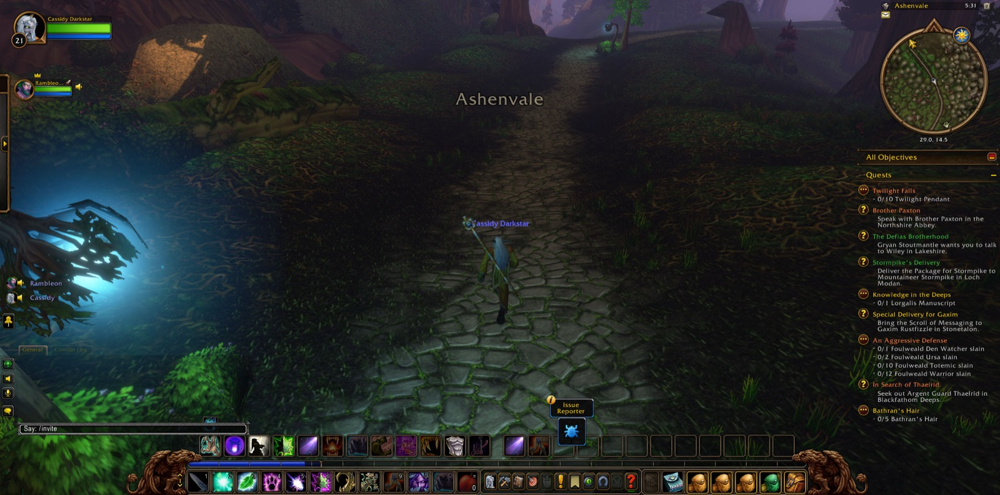
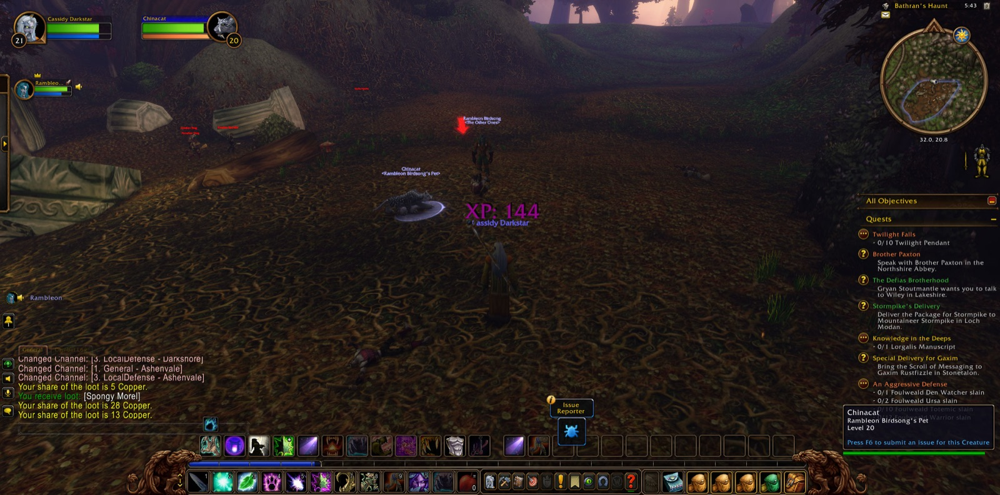
Then Rambleon came back to him, and together they went north by Twilight Shore, The Long Wash and Auberdine, and over Cliffspring River. At the Ruins of Mathystra, beneath the Tower of Althalaxx, Rambleon parted from him, and Sneaky the rogue took up the fight, with Ursamajor the druid beside them for a good part of it, and Elowyn the hunter for a single passing moment. There the Stormscale were thinned: twelve Myrmidons, eight Sorceresses and six Warriors for "Swelling Forces," and many more besides. Six Mathystra Relics were gathered as well. At Ameth'Aran Rambleon was with him again, and Telas and Ryaj, both druids, stood near as Anaya Dawnrunner was laid low. By Wildbend River he came to the Grove of the Ancients, where both labours were completed, and he received a new charge, "The Sleeper Has Awakened."
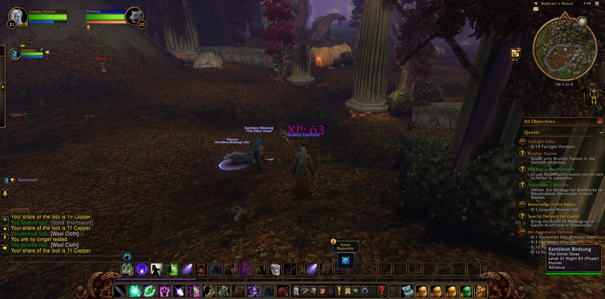
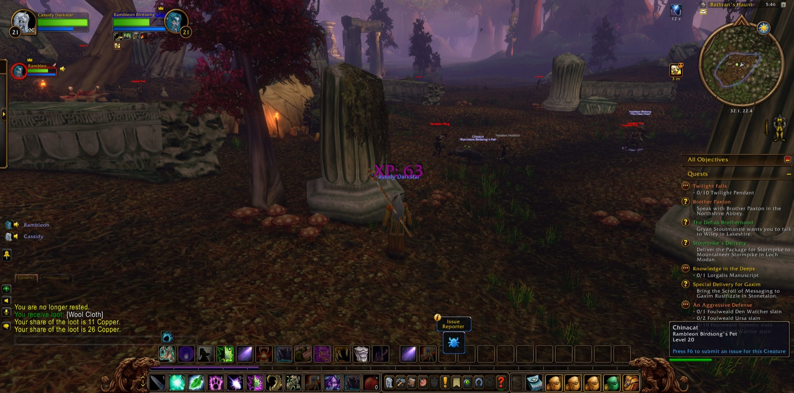
Back in Ashenvale he went to Iris Lake, past Moss Eaters, an Ashenvale Bear and a Wildthorn Stalker, and found Elune's Tear, which he carried home to Astranaar. At The Ruins of Stardust he gathered five handfuls of stardust among the Shadethicket, and when that errand was handed in he came into his strength at the twenty-second level, and a picture was taken. He accepted "Fallen Sky Lake." Then he went to Thistlefur Village, through Avengers, Shamans and a Pathfinder, and there Dal Bloodclaw fell; he bore the skull back to Astranaar, and "Culling the Threat" was done. Last of all he crossed The Veiled Sea to Rut'theran Village and climbed to Darnassus, and he walked by the Cenarion Enclave and the Craftsmen's, Warrior's and Tradesmen's Terraces. There, beneath the boughs of his own people, he halted, with Fallen Sky Lake and the Sleeper's waking still waiting on the road ahead.
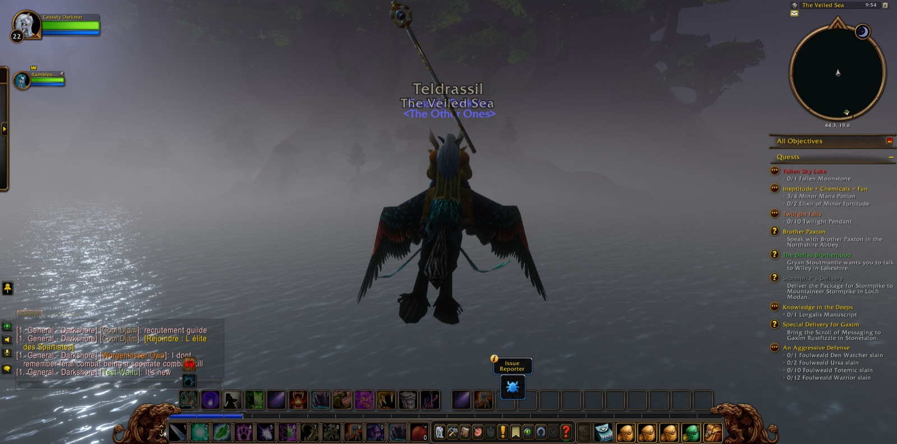
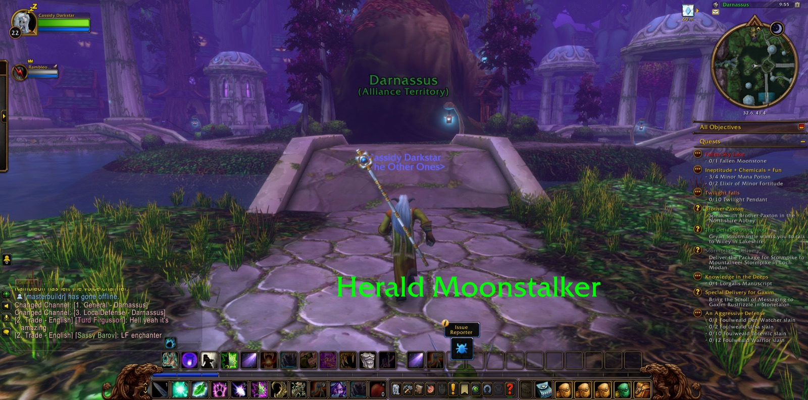
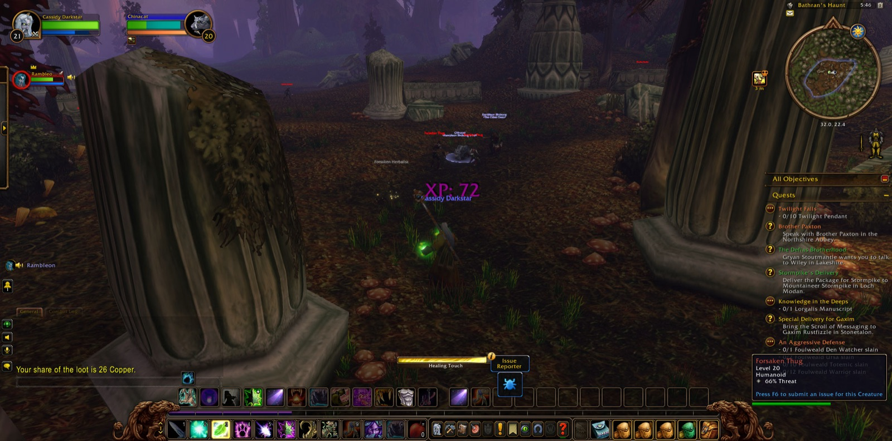
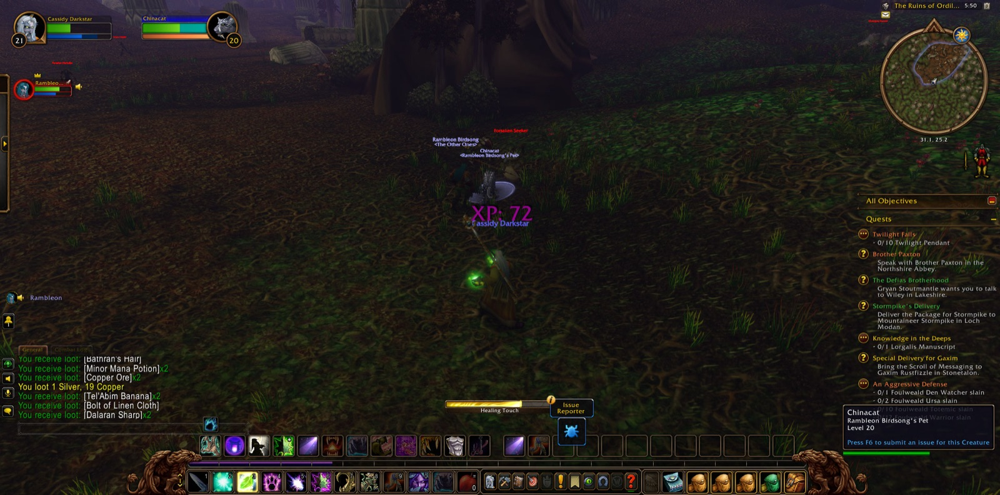
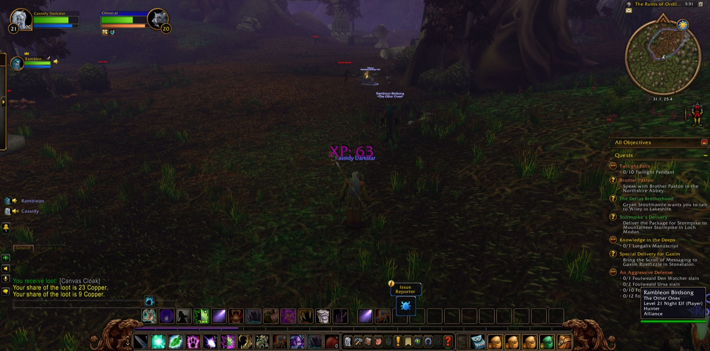
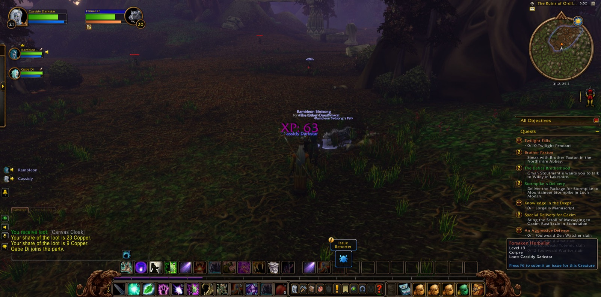
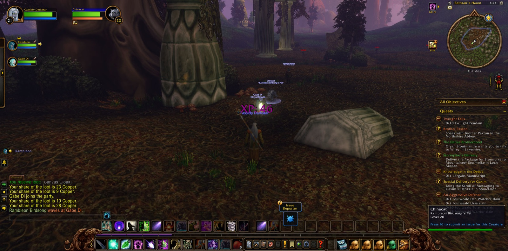
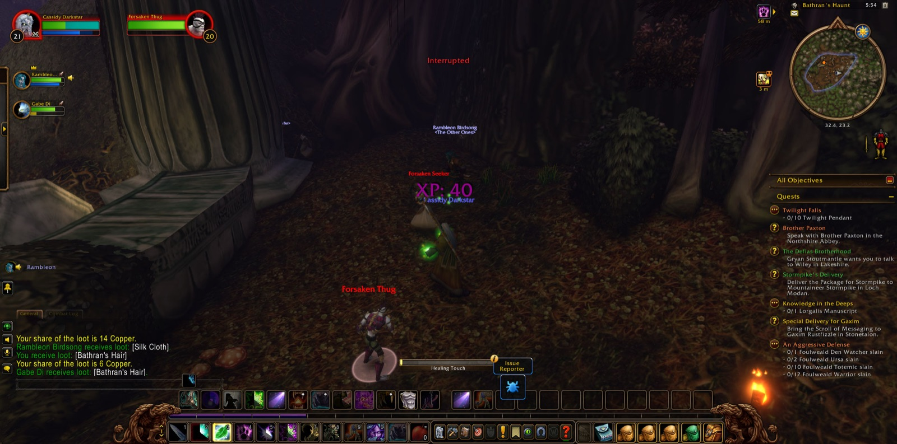